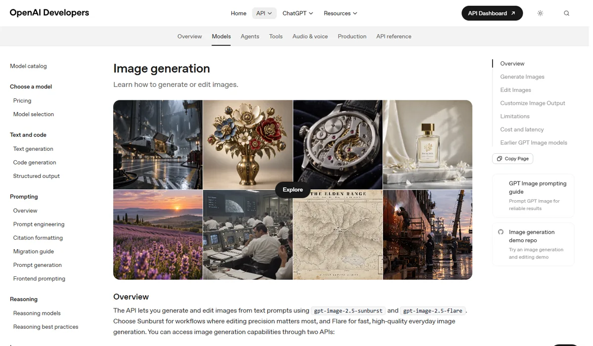

OpenAIOpenAI
OpenAI 在 2026 年做了一次明确取舍：关停视频产品 Sora，集中做图像。GPT Image 系列包揽第三方盲测榜前三，并内置在 12 亿周活用户的 ChatGPT 里；代价是价格最高、视频和 3D 完全缺位。
一页结论
- 退出视频：2026 年 3 月 24 日宣布关停 Sora，App 于 4 月 26 日、API 于 9 月 24 日停止；CFO 称原因是“算力不足”，公司要把算力集中到编程、企业和自动化研究上S7S8S10
- 图像质量领先：GPT Image 2.5 的 Sunburst、Flare 和 GPT Image 2 包揽 Artificial Analysis 文生图榜前三S1
- 生图做进主入口：Images 2.0 加入“思考”，能联网搜索、一次出最多 8 张并自查；Images 2.5 对免费用户开放S5S11
- 价格最高一档：最高质量档每张约 0.21 美元，前十名里最贵；低质量档每张约 0.006 美元，可做草稿S1S4
- 迪士尼合作随 Sora 告吹：迪士尼原计划投资 10 亿美元并授权 200 多个角色，交易未完成即终止S8S10
01公司介绍
02公司战略
OpenAI 的主线是“收缩视频、做强图像、一切进 ChatGPT”：把有限的算力留给编程、企业和 Agent，图像生成作为 ChatGPT 的核心能力保留。
- 关停 Sora：Sora 2 于 2025 年 9 月 30 日随 iOS App 上线，2026 年 3 月 24 日宣布关停；OpenAI 内部备忘录称 Sora 不会并入 ChatGPT，研究团队转向长期的世界模型研究S8S10
- 理由是算力和聚焦：CFO Sarah Friar 称“我们面临算力不足”；应用业务 CEO Fidji Simo 要求团队聚焦高生产力场景，在企业市场与 Anthropic 竞争S7S8
- 图像进入“会思考”阶段：Images 2.0（2026 年 4 月）能先联网搜索、规划，再一次生成最多 8 张风格一致的图并自查S5
- 快慢两档：Images 2.5（2026 年 9 月）分成 Flare（默认，延迟比 GPT Image 2 低 50%）和 Sunburst（编辑精度优先，生成更慢）S6S11
- 旧模型退场：gpt-image-1 于 2026 年 10 月 23 日停用，官方推荐迁移到 2.5 系列S11
03定位与竞争
一句话定位：为 ChatGPT 用户和开发者，在对话、办公和营销设计场景中，提供质量和文字准确度最高的图像生成与编辑，是 ChatGPT 的内置能力而不是独立产品。
| 目标用户 | 主要入口 | 依据 |
|---|---|---|
| ChatGPT 普通用户 | ChatGPT（含免费版） | Images 2.5 对所有 ChatGPT 用户开放，付费用户等待更短、额度更高S6S11 |
| 办公与知识工作者 | ChatGPT Work、Codex | Images 2.5 同时上线 ChatGPT Work 与 CodexS6S11 |
| 开发者与企业 | OpenAI API | 按 token 计费，可选 Flare 或 SunburstS2S11 |
| 设计工具用户 | Adobe Firefly 等第三方 | Adobe 官网显示 Firefly 支持 GPT Image 2S13 |
04产品与模型矩阵
| 类别 | 模型 / 产品 | 定位 | 状态（2026-11） |
|---|---|---|---|
| 图像 | GPT Image 2.5 Flare | 默认模型，质量高于 GPT Image 2，延迟低 50% | 正式可用（9 月 8 日发布）S6S11 |
| 图像 | GPT Image 2.5 Sunburst | 编辑精度优先，适合多轮精修 | 正式可用S6S11 |
| 图像 | GPT Image 2 | 带“思考”的图像模型：联网、多图、自查，最高 2K | 可用（4 月 21 日发布）S2S5 |
| 图像 | GPT Image 1.5 / 1 mini | 上一代与低价小模型 | API 可用S2 |
| 图像 | gpt-image-1 | 早期模型 | 10 月 23 日停用S11 |
| 视频 | Sora 2 | 文生视频与社交 App | App 4 月 26 日停止、API 9 月 24 日停止S9S10 |
| 3D | — | 没有 3D 生成产品 | — |
| 产品入口 | ChatGPT Images | 对话生图，附带手绘草图工具、模板、评论和可分享的提示词 | 免费与付费用户可用S6S11 |

05生成能力与可控性
图像质量与文字渲染在第三方盲测中排第一；编辑和遮罩仍有不精确的地方，ChatGPT 内部用哪个模型也不透明。
| 能力 | GPT Image 2.5 |
|---|---|
| 分辨率 | 推荐 1024×1024、1536×1024、1024×1536；自定义尺寸最长边 3840 像素（约 4K），超过 2560×1440 属实验性质S2 |
| 宽高比 | 1:3 到 3:1S2 |
| 质量档 | low、medium、high、xhigh、max；xhigh 和 max 为 2.5 新增S2 |
| 输入与参考 | 支持多张参考图合成（文档示例为 4 张）S2 |
| 编辑 | 遮罩编辑由提示词驱动，官方说明模型“不一定精确遵循遮罩形状”；Sunburst 面向编辑精度S2S11 |
| 文字渲染 | 官方称能处理小字、图标、界面元素和日文、韩文、印地语等非拉丁文字；文档也承认精确的文字位置仍有困难S2S5 |
| 其他 | 支持透明背景（PNG / WebP 输出）S2 |
| 速度 | Flare 比 GPT Image 2 延迟低 50%；复杂提示词最长约 2 分钟，多格漫画等复杂输出需要几分钟S2S5S11 |
第三方评测怎么说
| 评测方 | 时间 | 对比对象 | 结论 |
|---|---|---|---|
| TechCrunch（Amanda Silberling） | 2026-04-21 | Images 2.0 生成餐厅菜单 | 菜单几乎可以直接使用，没有明显错字；对比 2024 年 DALL-E 3 生成的菜单满是拼写错误S5 |
| Decrypt（Jose Antonio Lanz） | 2026-05-02 | GPT Image 2 vs Nano Banana 2，8 项 | GPT Image 2 胜 4 项、负 3 项、平 1 项，强在古典画风、签名字体、密集文字和图像编辑；多项输出有过度锐化的问题S3 |
| Decrypt（Jose Antonio Lanz） | 2026-09-12 | ChatGPT Images 2.5 vs Nano Banana 2，6 项 | 3 比 3，整体美学基本持平S4 |
| The Decoder（Maximilian Schreiner） | 2026-09-09 | ChatGPT Images 2.5 编辑测试 | ChatGPT Work 中编辑只改指定部分；普通 Chat 模式里后续图片的细节会漂移，作者判断 Chat 模式用的是较弱的模型，官方没有说明何时调用哪一档S11 |
测试规模都较小，属于单作者实测。接入 OpenAI 模型的平台所写的评测未采用。
评测共识：GPT Image 是当前质量和文字渲染的标杆，但领先幅度不大，与 Google 在具体任务上互有胜负；问题集中在过度锐化、价格高，以及 ChatGPT 内部模型路由不透明。
06解决方案与场景
07商业模式与价格
两条收费线：ChatGPT 订阅（图像生成是其中一项能力）与按 token 计费的 API；视频的收入线已随 Sora 关停而消失。
| 模型 | 图像输入 | 图像输出 | 批量价（输入 / 输出） |
|---|---|---|---|
| GPT Image 2.5 Flare / Sunburst | $8 / 百万 token | $30 / 百万 token | $4 / $15 |
| GPT Image 2 | $8 | $30 | $4 / $15 |
| GPT Image 1.5 | $8 | $32 | $4 / $16 |
| GPT Image 1 mini | $2.50 | $8 | $1.25 / $4 |
OpenAI API 官方定价，2026-11-04 访问；文字 token 另计。The Decoder 在 9 月发布时报道 2.5 没有批量价，当前定价页已列出批量价。来源：S2S11
| 任务 | 用什么 | 估算成本 |
|---|---|---|
| 一张 1024×1024 草稿图 | GPT Image 2 low | $0.006 |
| 一张 1024×1024 标准图 | GPT Image 2 medium | $0.053 |
| 一张 1024×1024 高质量图 | GPT Image 2 high / 2.5 max | 约 $0.21 |
| 一条短视频 | — | 已无视频产品 |
GPT Image 2 价格取官方示例表；2.5 max 取 Artificial Analysis 列出的官方 API 价（每千张 210.7 美元）；批量调用约减半。来源：S1S2
ChatGPT 侧：Images 2.5 对免费用户开放，付费用户等待时间更短、额度更高；“思考”等高级生成仅限付费方案S5S11。
08上下游与渠道
| 环节 | 情况 |
|---|---|
| 算力 | CNBC 报道 OpenAI 已转向购买云算力而非自建大型数据中心；CFO 称公司面临算力不足，这是关停 Sora 的直接原因S7S8 |
| 训练数据 | OpenAI 未公开图像模型的训练数据与架构S5 |
| 自有渠道 | ChatGPT、ChatGPT Work、CodexS6 |
| 开发者渠道 | Image API 与 Responses APIS2 |
| 第三方平台 | Adobe Firefly 支持 GPT Image 2S13 |
值得注意的是，OpenAI 在图像内容标识上采用了 Google DeepMind 的 SynthID 隐形水印，同时加入 C2PA 元数据S11。
09用户、客户与收入
| 指标 | 数据 | 口径 |
|---|---|---|
| ChatGPT 每周用户 | 12 亿 | 全部 ChatGPT 用户，非图像功能单独数据（2026 年 DevDay）S12 |
| Images 2.0 上线首周 | 印度约 500 万次下载，美国约 200 万次 | ChatGPT App 下载量，Sensor Tower 估算S14 |
| Images 2.0 对整体活跃的拉动 | 全球 App 下载环比 +11%，日活与会话仅约 +1% | Sensor Tower 估算S14 |
| Sora App 下载 | 峰值月约 333 万次（2025 年 11 月），2026 年 2 月降至约 113 万次 | Appfigures 估算S9 |
| Sora 应用内收入 | 生命周期约 210 万美元 | 主要是视频生成额度，Appfigures 估算S9 |
| 图像业务收入 | 未单独披露 | — |
10用户口碑与容错设计
11版权与合规
- Sora 的肖像与版权争议：上线后出现大量公众人物深度伪造视频，马丁·路德·金、罗宾·威廉姆斯的家属公开要求停止；用户还生成了马里奥、火影忍者、皮卡丘等版权角色；“客串”功能被法院要求改名S9S10
- 日本版权方施压：2025 年 10 月，日本内容海外流通促进机构（CODA）要求 OpenAI 停止使用其会员作品，涉及吉卜力、史克威尔艾尼克斯等S10
- 迪士尼合作终止：2025 年 12 月宣布的 10 亿美元投资与角色授权，在 2026 年 3 月随 Sora 关停而终止，资金未到位；好莱坞演员与编剧工会曾公开批评该合作S9S10
- 内容标识：Images 2.5 输出带 C2PA 元数据和 SynthID 隐形水印S11
- 训练数据不透明：OpenAI 未披露图像模型的架构和训练数据S5
12近期动态
13潜在风险分析意见
- 价格劣势：领先幅度只有十几分，价格却是 Google 的约 6 倍；在批量出图场景中容易被替换
- 品类缺口：没有视频和 3D，无法满足“图 + 视频”一站式的营销与电商需求，客户可能整体转向覆盖更全的厂商
- 信任成本：Sora 上线半年即关停、迪士尼合作终止，企业客户可能担心 OpenAI 对非核心产品的长期投入
- ChatGPT 体验不透明：同一产品内模型路由不清楚，用户得到的效果不稳定，影响口碑
- 版权与肖像风险：Sora 时期的争议虽随产品关停降温，但图像生成仍面临同类诉求
14综合结论分析意见
关键动作拆解（三问法）
| 动作 | 为什么做 | 效果如何 | 要不要学 |
|---|---|---|---|
| 关停 Sora | 官方：算力不足、聚焦企业与编程；媒体：用户兴趣快速下滑 | 节省算力，但失去视频品类和迪士尼合作；Sora 生命周期内购仅约 210 万美元S8S9 | 学：及时止损高成本、弱变现的产品；不学：先大张旗鼓签合作再撤退 |
| 图像加入“思考” | 让图像能用上语言模型的推理和联网能力 | 文字与信息准确度明显改善，盲测榜第一S1S5 | 高优借鉴生成前先检索和规划 |
| Flare / Sunburst 两档 | 日常生成要快，精修要准 | Flare 延迟降 50%；但 ChatGPT 内部路由不透明，引发困惑S11 | 借鉴分档，但要让用户知道用的是哪一档 |
| 采用 Google 的 SynthID | 复用业界已有的水印标准，降低合规成本 | 与 C2PA 一起作为来源标识S11 | 借鉴用通用标准，不自造 |
优势
- 图像质量与文字渲染第一
- ChatGPT 超大入口
- 推理 + 联网生图
劣势
- 价格最高一档
- 没有视频与 3D
- 模型路由不透明
机会
- 营销物料、信息图等“要求准确”的生成场景
- 通过 API 进入设计工具
威胁
- Google 以约六分之一的价格逼近
- Meta、微软、xAI 的图像模型进入前 15
- 版权诉求
对本系列三个问题的回答
- 大厂会不会通吃？ 不会。OpenAI 在图像上领先，却主动放弃了视频；连头部大厂都要按算力做取舍，视频赛道因此留给了 Google、字节、快手和专业公司
- 钱从哪里来？ 图像生成主要用来留住和转化 ChatGPT 订阅用户，再加上 API；Sora 的经历说明，独立的消费级视频 App 很难靠额度付费养活高昂的算力
- 3D 离商用还差什么？ OpenAI 没有 3D 产品，不提供参考
对 AI 产品团队的启示
高优借鉴
- 把生成能力做进主产品，而不是另起一个独立 App（ChatGPT 生图持续增长，Sora 独立 App 半年关停）
- 生成前先检索和规划：对电商、营销素材里的文字和信息准确度帮助最大
- 快、精两档模型，并让用户看得到当前用的是哪一档
观望
- 高质量档的定价：质量领先但价格是对手 6 倍，能否守住要看后续价格战
不建议
- 在没有清晰变现路径时上线高算力消费级视频产品
- 在产品稳定前与大 IP 方签大额独家合作
信息缺口
以下信息未找到可靠的公开来源，本报告不做推测。
- 图像业务的单独收入与使用量（OpenAI 自 2025 年 4 月后未公布累计生图数量）
- GPT Image 2.5 各尺寸、各质量档的官方单张价格（文档只提供交互式计算器）
- ChatGPT 内部 Flare 与 Sunburst 的路由规则
- 除 Adobe 外，其他设计工具（Figma、Canva 等）接入 GPT Image 2 的官方确认
- 图像模型的训练数据来源
来源
A 官方 · B 权威媒体或第三方 · C 社区（仅用于口碑与线索）。访问日期均为 2026-11-04。
- S1 · BAA-Image-T2I v2.1 Text to Image LeaderboardArtificial Analysis · 2026-11-04 访问
- S2 · AAPI Pricing / Image generation guideOpenAI Developers · 2026-11-04 访问
- S3 · BOpenAI GPT Image 2 vs Google Nano Banana 2: Which AI Image Generator Is Best?Decrypt · 2026-05-02
- S4 · BChatGPT Images 2.5 vs Nano Banana 2: Which One is Better?Decrypt · 2026-09-12
- S5 · BChatGPT's new Images 2.0 model is surprisingly good at generating textTechCrunch · 2026-04-21
- S6 · AIntroducing ChatGPT Images 2.5OpenAI · 2026-09-08
- S7 · BOpenAI shutters short-form video app Sora as company reels in costsCNBC · 2026-03-24
- S8 · BDisney pulls out of OpenAI partnership after Sora app and API gets killedThe Decoder · 2026-03-25
- S9 · BOpenAI's Sora was the creepiest app on your phone — now it's shutting downTechCrunch（援引 Appfigures） · 2026-03-24
- S10 · BSora (text-to-video model)Wikipedia（汇总 OpenAI 公告与媒体报道） · 2026-11-04 访问
- S11 · BChatGPT Images 2.5: Faster, more precise, but not the same for everyoneThe Decoder · 2026-09-09
- S12 · BOpenAI revenue keeps surging as company seeks $30 billion in fresh capitalThe Decoder（援引金融时报、彭博、Axios） · 2026-10
- S13 · AGPT Image in Adobe FireflyAdobe · 2026-11-04 检索
- S14 · BChatGPT Images 2.0 is a hit in India, but not a big winner elsewhere, yetTechCrunch（援引 Sensor Tower、Similarweb） · 2026-04-30